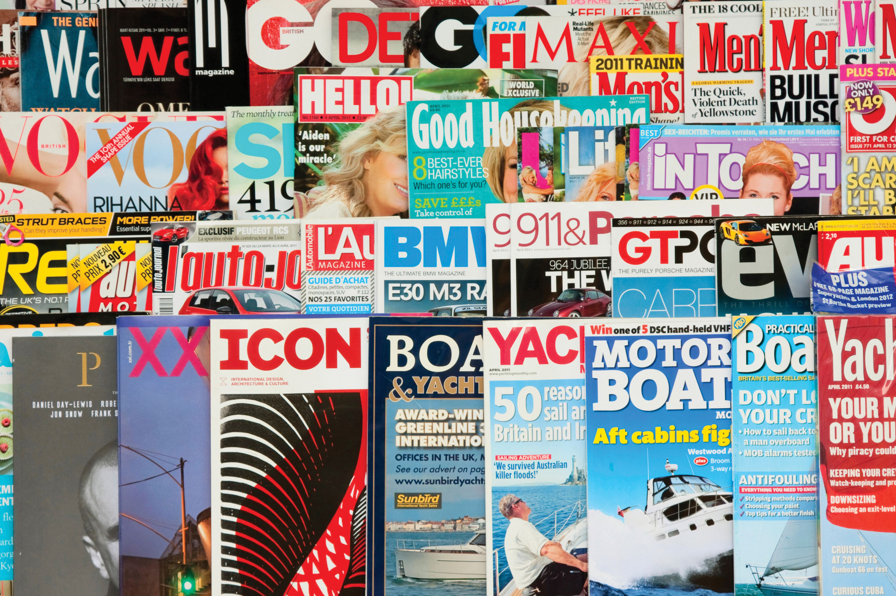
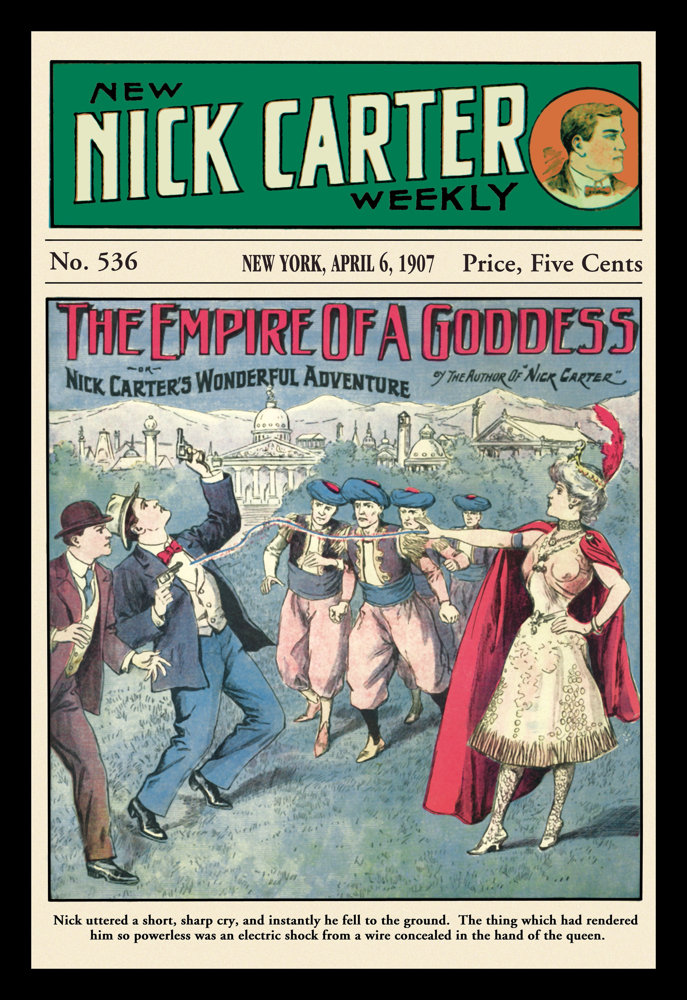
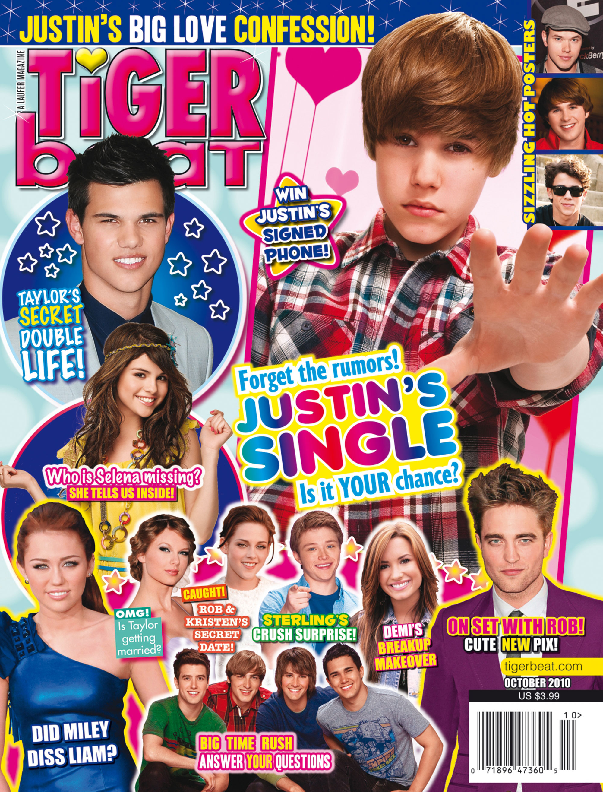
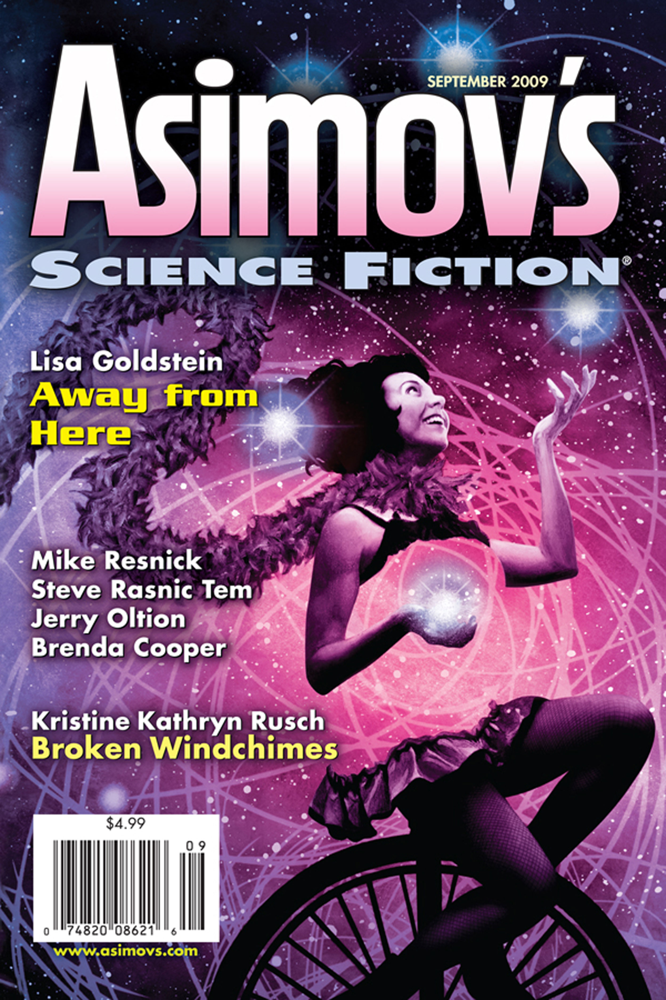

Figure 5.1
On October 5, 2009, publisher Condé Nast announced that the November 2009 issue of respected food magazine Gourmet would be its last. The decision came as a shock to many readers who, since 1941, had believed that “Gourmet was to food what Vogue is to fashion, a magazine with a rich history and a perch high in the publishing firmament.”Stephanie Clifford, “Condé Nast Closes Gourmet and 3 Other Magazines,” New York Times, October 6, 2009, http://www.nytimes.com/2009/10/06/business/media/06gourmet.html. Although Condé Nast folded three other publications—parenting magazine Cookie and bridal magazines Elegant Bride and Modern Bride—the elimination of Gourmet received the most attention because of the publication’s long history and popularity. Although some readers were angry about the sudden print halt, some understood that the closure was simply a reflection of a changing market.
Magazine publishers have been struggling with competition for advertising dollars for years. The magazine industry took a dramatic hit from the financial crisis that began in the fall of 2007, with many publications folding altogether, several moving to online-only models, and nearly all implementing mass layoffs to cut costs.Vocus Research, State of the Media Report 2011: Adapting, Surviving, and Reviving, http://www.vocus.com/resources/state-of-media/2011-report-adapting-surviving-reviving.pdf. The crisis forced the high-end retailers that support Condé Nast magazines to slash their advertising budgets, and the subsequent decline in advertising revenue put the Condé Nast publications in jeopardy.Daniel Gross, “Don’t Make Me Eat My Words,” Newsweek, October 7, 2009, http://www.newsweek.com/2009/10/06/don-t-make-me-eat-my-words.html.
Although this appears to be grim news for an industry that has survived since the 17th century, magazines may not be truly obsolete. Many analysts are hopeful that the magazine industry, with its long, complex past, is simply in a slump. According to the Magazine Publishers of America, some 7,383 magazines appeared in publication in 2008.Association of Magazine Media, “Clearing up Misperceptions about Magazine Closings,” white paper, August 2009, http://www.magazine.org/ASSETS/ACC5AFCF184843B9B8A4CE13080DB232/misperceptions-about-magazine-closings-082009.pdf. The following year, media private-equity firm Veronis Suhler Stevenson predicted that magazine ad revenues would stabilize in 2013.Stephanie Clifford, “A Look Ahead at the Money in the Communications Industry,” New York Times, August 3, 2009, http://www.nytimes.com/2009/08/04/business/media/04adco.html. Former Newsweek financial writer Daniel Gross—though admittedly biased—believes that the industry will strengthen. He describes the panic of some who refer to the demise of print media as symptoms of an “irrational depression surrounding print.”Daniel Gross, “Don’t Make Me Eat My Words,” Newsweek, October 7, 2009, http://www.newsweek.com/2009/10/06/don-t-make-me-eat-my-words.html. Yet even he admits that he may be mistaken in his belief that the current downward trend is just a bump in the road. As Gross stated, “[i]f I’m wrong, I may have to eat my words. And I’ll be doubly sad because I won’t have Gourmet to tell me what wine goes best with them.”Daniel Gross, “Don’t Make Me Eat My Words,” Newsweek, October 7, 2009, http://www.newsweek.com/2009/10/06/don-t-make-me-eat-my-words.html. So, many have begun to wonder, what will the future of the magazine business hold?
If Gourmet’s closure is any indication, the magazines of the future will be a product of cross-media integration, particularly between print and television. “Advertising support for luxurious magazines like Gourmet has dwindled, while grocery store advertisers have continued to buy pages at more accessible, celebrity-driven magazines like Every Day with Rachel Ray, which specializes in 30-minute meals, and Food Network Magazine.”Stephanie Clifford, “Condé Nast Closes Gourmet and 3 Other Magazines,” New York Times, October 6, 2009, http://www.nytimes.com/2009/10/06/business/media/06gourmet.html. This trend suggests that the best—and perhaps only—way for magazines to remain viable is to gain an audience via another medium and then use that celebrity-driven status to sell the print product.
The magazine industry may change drastically over the next several years. This evolution may be affected by a number of variables, such as the Internet, a new generation of readers, the fluctuation of advertising costs, and the recovery from the 2008 recession. What remains to be seen is whether the magazine industry can continue to be a dominant force in American culture in the midst of these changes.
Like the newspaper, the magazine has a complex history shaped by the cultures in which it developed. Examining the industry’s roots and its transformation over time can contribute to a better understanding of the modern industry.
After the printing press became prevalent in Europe, early publishers began to conceptualize the magazine. Forerunners of the familiar modern magazine first appeared during the 17th century in the form of brochures, pamphlets, and almanacs. Soon, publishers realized that irregular publication schedules required too much time and energy. A gradual shift then occurred as publishers sought regular readers with specific interests. But the early magazine was unlike any other previous publication. It was not enough of a news source to be a newspaper, but it could not be considered pleasure reading either. Instead, early magazines occupied the middle ground between the two. Encyclopaedia Britannica, s.v. “History of Publishing,” http://www.britannica.com/EBchecked/topic/482597/publishing/28679/Magazine-publishing.
German theologian and poet Johann Rist published the first true magazine between 1663 and 1668. Titled Erbauliche Monaths-Unterredungen, or Edifying Monthly Discussions, Rist’s publication inspired a number of others to begin printing literary journals across Europe: Denis de Sallo’s French Journal des Sçavans (1665), the Royal Society’s English Philosophical Transactions (1665), and Francesco Nazzari’s Italian Giomale de’letterati (1668). In 1684, exiled Frenchman Pierre Bayle published Novelles de la République des Lettres in the Netherlands to escape French censorship. Profoundly affected by a general revival of learning during the 1600s, the publications inspired enthusiasm for education.
Another Frenchman, Jean Donneau de Vizé, published the first “periodical of amusement,” Le Mercure Galant (later renamed Mercure de France), in 1672, which contained news, short stories, and poetry. This combination of news and pleasurable reading became incredibly popular, causing other publications to imitate the magazine.Encyclopaedia Britannica, s.v. “History of Publishing,” http://www.britannica.com/EBchecked/topic/482597/publishing/28679/Magazine-publishing. This lighter magazine catered to a different reader than did the other, more intellectual publications of the day, offering articles for entertainment and enjoyment rather than for education.
With the arrival of the 18th century came an increase in literacy. Women, who enjoyed a considerable rise in literacy rates, began reading in record numbers. This growth affected the literary world as a whole, inspiring a large number of female writers to publish novels for female readers.Abby Wolf, “Introduction,” 19th Century Women Writers, PBS, http://www.pbs.org/wgbh/masterpiece/wives/writers/intro.html. This influx of female readers also helped magazines flourish as more women sought out the publications as a source of knowledge and entertainment. In fact, many magazines jumped at the chance to reach out to women. The Athenian Mercury, the first magazine written specifically for women, appeared in 1693.
Much as in newspaper publication, Great Britain closely followed Continental Europe’s lead in producing magazines. During the early 18th century, three major influential magazines published regularly in Great Britain: Robinson Crusoe author Daniel Defoe’s the Review, Sir Richard Steele’s the Tatler, and Joseph Addison and Steele’s the Spectator.
Figure 5.2

Great Britain’s first magazines emerged during the early 18th century, shortly after publishers had popularized the format in Europe.
All three of these publications were published either daily or several times a week. While they were supplied as frequently as newspapers, their content was closer to that of magazines. The Review focused primarily on domestic and foreign affairs and featured opinion-based political articles. The Spectator replaced the Tatler, which published from 1709 to 1711. Both Tatler and Spectator emphasized living and culture and frequently used humor to promote virtuous behavior.Abby Wolf, “Introduction,” 19th Century Women Writers, PBS, http://www.pbs.org/wgbh/masterpiece/wives/writers/intro.html. Tatler and Spectator, in particular, drew a large number of female readers, and both magazines eventually added female-targeted publications: Female Tatler in 1709 and Female Spectator in 1744.
The first American magazines debuted in 1741, when Andrew Bradford’s American Magazine and Benjamin Franklin’s General Magazine began publication in Philadelphia a mere 3 days apart from each other. Neither magazine lasted long, however; American Magazine folded after only 3 months and General Magazine after 6. The short-lived nature of the publications likely had less to do with the outlets themselves and more to do with the fact that they were “limited by too few readers with leisure time to read, high costs of publishing, and expensive distribution systems.”Joseph Straubhaar, Robert Larose, and Lucinda Davenport, Media Now: Understanding Media, Culture, and Technology (Boston: Wadsworth, 2009). Regardless of this early setback, magazines began to flourish during the latter half of the 18th century, and by the end of the 1700s, more than 100 magazines had appeared in the nascent United States. Despite this large publication figure, typical colonial magazines still recorded low circulationThe number of copies of a magazine distributed. figures and were considered highbrow.
All this changed during the 1830s when publishers began taking advantage of a general decline in the cost of printing and mailing publications and started producing less-expensive magazines with a wider audience in mind. Magazine style also transformed. While early magazines focused on improvement and reason, later versions focused on amusement. No longer were magazines focused on the elite class. Publishers took advantage of their freshly expanded audience and began offering family magazines, children’s magazines, and women’s magazines. Women’s publications again proved to be a highly lucrative market. One of the earliest American women’s magazines was Godey’s Lady’s Book, a Philadelphia-based monthly that printed between 1830 and 1898. This particular magazine reached out to female readers by employing nearly 150 women.
The first truly successful mass circulation magazine in the United States was The Saturday Evening Post. This weekly magazine first began printing in 1821 and remained in regular print production until 1969, when it briefly ceased circulation. However, in 1971 a new owner remodeled the magazine to focus on health and medical breakthroughs. From the time of its first publication in the early 1800s, The Saturday Evening Post quickly grew in popularity; by 1855, it had a circulation of 90,000 copies per year.Saturday Evening Post, “About,” http://www.saturdayeveningpost.com/about. Widely recognized for transforming the look of the magazine, the publication was the first to put artwork on its cover, a decision that The Saturday Evening Post has said “connected readers intimately with the magazine as a whole.”Saturday Evening Post, “About,” http://www.saturdayeveningpost.com/about. Certainly, The Saturday Evening Post took advantage of the format by featuring the work of famous artists such as Norman Rockwell. Using such recognizable artists boosted circulation as “Americans everywhere recognized the art of the Post and eagerly awaited the next issue because of it.”Saturday Evening Post, “About,” http://www.saturdayeveningpost.com/about.
Figure 5.3

The Saturday Evening Post popularized the use of artwork of its cover, setting a standard for other publications to follow.
But The Saturday Evening Post did not only feature famous artists; it also published works by famous authors including F. Scott Fitzgerald, Sinclair Lewis, and Ring Lardner. The popularity of these writers contributed to the continuing success of the magazine.
Another early U.S. mass magazine was Youth’s Companion, which published between 1827 and 1929 when it merged with The American Boy. Based in Boston, Massachusetts, this periodical featured fairly religious content and developed a reputation as a wholesome magazine that encouraged young readers to be virtuous and pious. Eventually, the magazine sought to reach a larger, adult audience by including tame entertainment pieces. Nevertheless, the magazine in time began featuring the work of prominent writers for both children and adults and became “a literary force to be reckoned with.”“Youth’s Companion,” Nineteenth-Century American Children and What They Read: Some of Their Magazines, http://www.merrycoz.org/MAGS2.HTM.
While magazines such as The Saturday Evening Post and Youth’s Companion were fairly popular, the industry still struggled to achieve widespread circulation. Most publications cost the then-hefty sum of 25 or 35 cents per issue, limiting readership to the relative few who could afford them. This all changed in 1893 when Samuel Sidney McClure began selling McClure’s Magazine, originally a literary and political magazine, at the bargain price of only 15 cents per issue. The trend caught on. Soon, Cosmopolitan (founded 1886) began selling for 12.5 cents, while Munsey Magazine (1886–1929) sold for only 10 cents. All three of these periodicals were widely successful. Frank A. Munsey, owner of Munsey Magazine, estimated that between 1893 and 1899 “the ten-cent magazine increased the magazine-buying public from 250,000 to 750,000 persons.”Encyclopaedia Britannica, s.v. “History of Publishing,” http://www.britannica.com/EBchecked/topic/482597/publishing/28679/Magazine-publishing. For the first time, magazines could be sold for less than they cost to produce. Because of greater circulation, publications could charge more for advertising space and decrease the cost to the customer.
By 1900, advertising had become a crucial component of the magazine business. In the early days of the industry, many publications attempted to keep advertisements out of their issues because of publishers’ natural fondness toward literature and writing.Encyclopaedia Britannica, s.v. “History of Publishing,” http://www.britannica.com/EBchecked/topic/482597/publishing/28679/Magazine-publishing. However, once circulation increased, advertisers sought out space in magazines to reach the larger audience. Magazines responded by raising advertising rates, ultimately increasing their profitability. By the turn of the 20th century, advertising became the norm in magazines, particularly in some women’s magazine, where advertisements accounted for nearly half of all content.
The arrival of the 20th century brought with it new types of magazines, including news, business, and picture magazines. In time, these types of publications came to dominate the industry and attract vast readerships.
As publishers became interested in succinctly presenting the fresh increase of worldwide information that technology made available during the late 19th and early 20th centuries, they designed the newsmagazineA journal that specializes in reporting and commenting on current events.. In 1923, Time became the first newsmagazine that focused on world news. Time first began publication with the proposition that “people are uninformed because no publication has adapted itself to the time which busy men are able to spend simply keeping informed.”Encyclopaedia Britannica, s.v. “History of Publishing,” http://www.britannica.com/EBchecked/topic/482597/publishing/28679/Magazine-publishing. Although the periodical struggled during its early years, Time hit its stride in 1928 and its readership grew. The magazine’s signature style of well-researched news presented in a succinct manner contributed greatly to its eventual success.
Several other newsmagazines came onto the market during this era as well. Business Week was founded in 1929 with a focus on the global market. Forbes, currently one of the most popular financial magazines, began printing in 1917 as a biweekly publication. In 1933, a former Time foreign editor founded Newsweek, which now has a circulation of nearly 4 million readers. Today, Newsweek and Time continue to compete with each other, furthering a trend that began in the early years of Newsweek.
PhotojournalismThe telling of stories through photography., or the telling of stories through photography, also became popular during the early 20th century. Although magazines had been running illustrations since the 19th century, as photography grew in popularity so did picture magazinesA journal that specializes in photography and typically features large spreads of photos with short captions and few articles.. The most influential picture magazine was Henry Luce’s Life, which regularly published between 1936 and 1972. Within weeks of its initial publication, Life had a circulation of 1 million. In Luce’s words, the publication aimed “to see life; to see the world; to witness great events; to watch the faces of the poor and the gestures of the proud; to see strange things.”Encyclopaedia Britannica, s.v. “History of Publishing,” http://www.britannica.com/EBchecked/topic/482597/publishing/28679/Magazine-publishing. It did not disappoint. Widely credited with establishing photojournalism, Life captured the attention of many on first read. With 96 large-format glossy pages, even the inaugural issue sold out. The opening photograph depicted an obstetrician holding a newborn baby with the caption “Life begins”.
While Life was the most influential picture magazine, it was certainly not the only photo-centric publication. Popular biweekly picture magazine Look printed between 1937 and 1971, claiming to compete with Life by reaching out to a larger audience. Although Look offered Life stiff competition during their almost identical print runs, the latter magazine is widely considered to have a greater legacy. Several other photo magazines—including Focus, Peek, Foto, Pic, and Click—also took their inspiration from Life.
During the late 20th and early 21st centuries, the advent of online technology began to greatly affect both the magazine industry and the print media as a whole. Much like newspaper publishers, magazine publishers have had to rethink their structure to reach out to an increasingly online market. The specifics of the changes made to the magazine industry will be discussed in further detail later in this chapter.
Select a magazine that you enjoy reading and research its history. Then, answer the following writing prompts.
Although magazines’ great contributions to the development of culture and popular trends are today widely acknowledged, the industry has not always been influential. Because of the significant costs associated with printing and mailing publications, magazines originally reached out only to regional audiences. Not until these expenses declined and advertising revenues increased were magazines able to justify the cost of mass circulation.
The late 19th century brought with it an increase in mass circulation for the U.S. magazine industry. This meant that magazines that had once targeted only a small part of the country suddenly began reaching a nationwide audience. In addition to the obvious benefit of increased magazine revenue, this shift to broad circulation caused an interesting phenomenon: the introduction of national trends. For the first time in U.S. history, mass circulation allowed news, stories, consumer goods, and fashions to be diffused and advertised to widespread, rather than regional, audiences. Mass circulation of magazines united the country as geographically diverse consumers read the same stories and saw the same advertisements.
Due to this growth in readership, advertisements became increasingly vital to the magazine industry. Advertisers sought to reach a large audience, and magazines willingly afforded them that opportunity, selling advertising space at higher rates. One business manager of Scribner’s Monthly, an early popular magazine, solicited advertisements by discussing the readership boom:
The publishers of Scribner’s Monthly will insert in each number of the magazine certain pages devoted to advertisements of a character likely to interest magazine readers. These will not increase the postage, while they will add materially to the ability of the publishers to render their magazines readable and attractive. The press of advertisements upon our first number shows how quickly the claims of the new monthly upon the business public are recognized. Our edition will be very large, and it will have a national circulation. It is now well understood that a first-class popular magazine furnishes to all men who seek a national market the very best medium for advertising that exists.Richard Ohmann, Selling Culture: Magazines, Markets, and Class at the Turn of the Century (New York: Verso, 1996), 26.
That national market was an entirely new one for publishers and advertisers. By the 1930s, market research had become the norm for periodicals as magazines—and advertisers—worked to better understand what readers wanted in their publications. However, market research has its limits; many publishers instead embraced the potential of magazines to simply tell people what they want or need, thus solidifying the role of the magazine as a driver of popular culture. As one editor of Vogue articulated, “If we find out what people want, it’s already too late.”Encyclopaedia Britannica, s.v. “History of Publishing,” http://www.britannica.com/EBchecked/topic/482597/publishing/28679/Magazine-publishing.
Magazines offered a place not only for advertisers but also for authors and poets to reach a large audience. Several publications regularly hired both new and established authors to write stories. As circulation increased, so did the desire for these authors to publish their work.
Literary magazinesA magazine that specializes in the publication of fictional stories. enjoyed a boom during the 19th century, publishing some of the period’s most important fiction. At one point or another, nearly every important American writer contributed to literary magazines; for example, Edgar Allan Poe, Mark Twain, Walt Whitman, and Ernest Hemingway all published in periodicals throughout their careers. Even writers working outside the country such as Ezra Pound and James Joyce sought out U.S. magazines to publish works that had been banned elsewhere.
Just as magazines offered authors a chance to display their writing to a large audience, they also allowed readers a taste of available literature. Even today, magazines print portions of books, which give readers a preview of the complete text. Portions of literary classics including Uncle Tom’s Cabin, Walden, Moby-Dick, Tom Sawyer, Huckleberry Finn, and Ulysses all made their debuts in magazines. Some novels—such as Edgar Rice Burroughs’s Tarzan of the Apes, John Hersey’s Hiroshima, and Ernest Hemingway’s The Old Man and the Sea—even appeared in magazines in full before being published in book form. The opportunity to publish in magazines has been invaluable for authors, but literary publications have also proved essential for the development of American culture. In publishing literary texts, journals have promoted now-classic stories, like the previously mentioned examples, that have defined American literary history and have shaped the U.S. story.
During the late 1800s, a new type of magazine was established: the pulp magazineA publication that specializes in genre-fiction stories., an all-fiction publication named for its rough wood-pulp paper. At the time, dime novels did not qualify for the same inexpensive postal rates that magazines did—but the pulps did. Suddenly, individuals had the opportunity to read popular genre fiction in these cheap magazines, like Adventure, Horror Stories, Startling Stories, and Weird Tales.
Figure 5.4
Although pulp magazines first began publishing in 1896, they truly gained popularity during the early 20th century.
Source: Used with permission from Getty Images.
Commonly acknowledged to be the invention of Frank Munsey, the pulps got their start as adventure magazines, but they eventually diverged into several categories such as love, detective, and western. The fiction stories did remarkably well until the mid-1930s, when newspaper comics first offered competition by printing collections on the same pulp paper. In 1937, however, the two genres collided with Detective Comics (where Batman made his first appearance), and the industry experienced a major boom. Although intended for children, the violent, horror-soaked comics drew a large adult audience. However, the graphic content of the pulp strips caused a stir, with the public divided on the nature of this new media. Defenders of the comics called them harmless, while critics thought they would provoke people to mimic the violent subject matter.Encyclopaedia Britannica, s.v. “History of Publishing,” http://www.britannica.com/EBchecked/topic/482597/publishing/28679/Magazine-publishing. Just as legislators struggle today with debates over censorship of television, music, and the Internet, they did so with pulp comics as well. Negative backlash against pulp comics was encouraged through several articles published by child psychologist Fredric Wertham, who alleged that comics were leading children into lives of crime.Jamie Coville, “The Comic Book Villain, Dr. Fredric Wertham, M.D.,” Seduction of the Innocents and the Attack on Comic Books, http://www.psu.edu/dept/inart10_110/inart10/cmbk4cca.html. In response to the controversy, an industry group known as the Association of Comics Magazine Publishers established a Publishers Code in 1948 with the aim of regulating the content of pulp comics. The Publishers Code was not well enforced, however; many publishers choose to ignore the code, and thus the controversy continued to rage. When Senate hearings raised the threat of government regulation in 1954, the pulp comics industry opted for self-censorship, and as a result the much stricter Comics Code Authority was established to control what material reached consumers.
In spite of the controversy surrounding the magazines, the industry flourished, and eventually new forms of pulp magazines emerged. Amazing Stories offered science fiction, and hand-drawn pinups filled so-called Girlie Pulps, which found an audience despite experiencing a setback in 1934 when police seized 10,000 copies and burned them. Even though both new genres attracted outcry from the public for their indecency, the pulps continued to grow in popularity. Many have argued that the difficulties of the Great Depression and the uncertainty of a looming world war made 1930s audiences ripe for the entertainment offered by fictional heroes, giving the pulp genre a ready audience.
The success of the pulps encouraged another major transformation in mainstream journalism: the rise of entertaining fan magazinesA publication that provides audiences with a behind-the-scenes look at the entertainment industry.. Typically focused on television, film, and music, fan magazines emerged as national entertainment during the early 20th century. During the early years of motion pictures, magazines such as Photoplay, Picture Play, Movie Mirror, and Movieland began publication, offering subscribers behind-the-scenes glimpses of well-known films. These periodicals were so successful that, as radio and television became popular, similar magazines came into existence to cover these new media. Television- and radio-focused magazines also provided weekly timetables of programs for their viewers and listeners. Although the emphasis of the fan magazine has changed over the years, even today much of the magazine industry is dominated by entertainment publications, like Entertainment Weekly, Rolling Stone, and TV Guide. In addition to providing entertainment news to readers, these publications are also useful to celebrities and media producers as a platform to market their new products.
During the 1940s, many publishers began pursuing teenagers, a previously ignored demographic. Seventeen magazine hit shelves in 1944, setting the stage for later publications such as Tiger Beat and Teen People. These magazines targeted young women, offering stories on fashion, makeup, celebrity news, and lifestyles. Since their beginnings, teen magazines have kept their articles relatively brief, instead reaching their target audiences with bright and bold photos. Tiger Beat, for example, is known for its collaged covers featuring a popular teen celebrity of the moment. Teen magazines influence popular culture not only through their reporting on celebrities, but also through their articles on celebrity fashion, which readers use to adopt fashion trends worn by celebrities. Like entertainment magazines, teen magazines are also useful marketing tools for celebrities and other media producers.
During their early years, most teen magazines sought out readers in their late teens, even offering articles on colleges. Today, however, to reach a wider audience, these same magazines intentionally target the preteen market by featuring younger actors and including more teenage celebrity gossip. In doing so, the magazine industry continues to influence younger and younger audiences, thus making a greater impact on American popular culture.
Figure 5.5
First popularized during the 1940s, teen magazines today target both tween and teenage audiences, bringing popular culture to the young.
In 2006, the Madrid fashion show made headlines by banning overly thin models to project an image of beauty and health. According to fashion show organizers, “models had to be within a healthy weight range. That means a 5-foot-9 woman would need to be at least 125 pounds.”Nanci Hellmich, “Do Thin Models Warp Girls’ Body Image?” USA Today, September 26, 2006, http://www.usatoday.com/news/health/2006-09-25-thin-models_x.htm. The debate over thin models has been around since the 1960s when model Twiggy entered the field. Since then, extremely thin models have ruled the runway despite claims to the contrary: Most American runway models measure within an inch or two of 6 feet tall, but weigh between just 120 and 124 pounds. With images of these models everywhere, many are growing concerned about their effect on American youths, especially teen girls.
Studies have shown that images of ultra-thin models distort women’s views of health and beauty, leading to depression, extreme dieting, and eating disorders. In one study, 69 percent of girls said that fashion models influence their idea of the perfect body shape, despite the fact that most models weigh 23 percent less than the average female.Healthy Place, “Eating Disorders: Body Image and Advertising,” December 11, 2008, http://www.healthyplace.com/eating-disorders/main/eating-disorders-body-image-and-advertising/menu-id-58/. Another study showed that 68 percent of Stanford University undergraduate and graduate students felt worse about themselves after looking through a women’s magazine.Healthy Place, “Eating Disorders: Body Image and Advertising,” December 11, 2008, http://www.healthyplace.com/eating-disorders/main/eating-disorders-body-image-and-advertising/menu-id-58/. Even more worrisome is the fact that young girls are being negatively affected by magazine images. “The number one wish for girls 11 to 17 is to be thinner, and girls as young as 5 have expressed fears of getting fat. Eighty percent of 10-year-old girls have dieted.”Healthy Place, “Eating Disorders: Body Image and Advertising,” December 11, 2008, http://www.healthyplace.com/eating-disorders/main/eating-disorders-body-image-and-advertising/menu-id-58/.
Some companies are fighting the trend of using super-thin models in their advertising. In 2004, Dove launched its Dove Campaign for Real Beauty; the company claims the goal of the ad campaign is to “help free ourselves and the next generation from beauty stereotypes.”Dove, “Campaign for Real Beauty,” http://www.dove.us/#/cfrb/about_cfrb.aspx. Dove’s ads feature women of many shapes, sizes, and ethnicities in little more than their undergarments. Dove has stated that it plans to continue using “real women” in marketing campaigns.Sophia Morrell, “Is the Use of Eating-Disorder Sufferers in Dove’s Ad Campaign an Act of Desperation?” Marketing Week, August 16, 2007, http://www.marketingweek.co.uk/analysis/is-the-use-of-eating-disorder-sufferers-in-doves-ad-campaign-an-act-of-desperation?/2057515.article.
Celebrity gossip is not just reserved for teen audiences. A stroll through a supermarket checkout lane reveals the vast assortment of celebrity magazinesA publication that provides an inside look into the lives of popular celebrities.—also known as gossip magazines—that target adults. First popularized during the 1970s, these celebrity magazines offer readers an inside perspective on the lives of the famous. Many magazines publish gossip stories that humanize celebrities by featuring them in a negative light. Despite the best efforts of celebrities and their agents, placement in these magazines can make or break celebrities’ reputations and foster much drama within the celebrity community. Because of intense competition for stories, celebrity magazines may pay large sums of money to celebrities or other sources for exclusive stories and photos. Celebrity magazines will be discussed in detail later in this chapter.
Look through a teen magazine like Seventeen or CosmoGIRL! and examine the models present in them. Then, answer the following writing prompts.
Magazines have evolved significantly since their inception. Magazines have affected the world by bringing news, entertainment, literature, and photography to their readers. Additionally, the magazine industry has profoundly affected U.S. popular culture. As magazines have developed over time, individual publications have targeted specific groups and have found particular niches. This section explores a number of popular periodicals and their effect on their target audiences.
The top-10 highest circulating magazines in the United States differ greatly in style and audience. From AARP to Better Homes and Gardens, from National Geographic to Family Circle, the list demonstrates the wide pool of readers and interests attracted to the medium. This section will explore the top three publications: AARP The Magazine, AARP Bulletin, and Reader’s Digest.
Some may be surprised to learn that the two magazines with the highest circulation in the United States are not ones readily available to buy at a newsstand or grocery store: AARP The Magazine and AARP Bulletin. Published by the nonprofit organization AARP (formerly known as the American Association of Retired Persons), both are automatically sent to the organization’s more than 40 million members.
A bimonthly publication that is “geared exclusively towards 50+ Americans seeking to enhance their quality of life as they age,”AARP, “AARP The Magazine,” http://aarpmedia.org/atm. AARP The Magazine publishes lifestyle articles and includes sections dedicated to health, money, work, relationships, and travel, among others. Its mission statement reads as follows:
AARP The Magazine provides three editorial versions targeted to different life stages (50–59, 60–69, 70+) to empower readers with editorial written just for them. Annual editorial packages, strong service journalism, and celebrity profiles will be presented in a warm, vibrant and inviting format to encourage readers to reflect, engage and enjoy.AARP, “AARP The Magazine,” http://aarpmedia.org/atm.
AARP also publishes AARP Bulletin, which is “a monthly news publication that reaches influential consumers and policymakers.”AARP, “AARP Bulletin,” http://aarpmedia.org/bulletin. Rather than presenting lifestyle stories, this publication focuses on news stories of interest to its target audience.
AARP Bulletin chronicles and interprets important social issues that affect 50+ Americans. News, balanced analysis and concise stories, in an accessible format, motivates these influential readers to engage in public policy on health care, financial well-being and consumer protection.AARP, “AARP Bulletin,” http://aarpmedia.org/bulletin.
Reader’s Digest boasts the third-highest circulation among U.S. magazines. First published in 1922 as a “digest of condensed articles of topical interest and entertainment value taken from other periodicals,”Encyclopaedia Britannica, s.v. “Reader’s Digest,” http://www.britannica.com/EBchecked/topic/492829/Readers-Digest. this famous pocket-sized journal was first produced on a low budget by a husband and wife team who believed the magazine would sell despite numerous rejections from magazine publishers.Encyclopaedia Britannica, s.v. “Reader’s Digest,” http://www.britannica.com/EBchecked/topic/492829/Readers-Digest. They were right. Reader’s Digest was an almost immediate success and now regularly outsells competitors. The monthly magazine has subscribers around the globe and seeks to “create products that inform, enrich, entertain and inspire people of all ages and cultures around the world.”Reader’s Digest, “Customer Care,” http://www.rd.com/customer-care/.
As discussed in Section 5.1 "History of Magazine Publishing", newsmagazines became popular during the 1920s. Today, newsmagazines make up a large portion of magazine sales, with multiple news periodicals ranking in the top 30 for circulation. Over time, a number of newsmagazines have established themselves in the industry, including Time, Newsweek, and U.S. News & World Report.
Newsweek’s initial February 1933 issue was called News-Week and featured seven different photographs from the week’s news on its cover. The weekly publication currently “offers comprehensive coverage of world events with a global network of correspondents, reporters and editors covering national and international affairs, business, science and technology, society and the arts and entertainment.”Newsweek, “History of Newsweek,” http://www.newsweek.com/2007/10/10/history-of-newsweek.html. Relying on a wide array of reporters, Newsweek also uniquely publishes a reader-penned section titled “My Turn.” The magazine has been hugely successful over the years and holds more prestigious National Magazine Awards than any other newsweekly.
The magazine has not been without its trials, however. In November of 2009 Newsweek published an article discussing Sarah Palin’s book, Going Rogue: An American Life. The cover of that issue featured a photo of Palin that had been used in an issue of Runner’s World with Palin in running attire. The words “How Do You Solve a Problem Like Sarah?” were splayed across the photograph.
Figure 5.6

Sarah Palin was the subject of a controversial cover of Newsweek, published in November 2009, that earned the magazine much criticism.
Source: Used with permission from Getty Images.
The cover caused a popular backlash, with readers calling it sexist and unfair. One reader suggested that Newsweek would never print a photograph of Barack Obama in such attire. In response, Newsweek published a photo of President Obama in his swim trunks in its following issue, although this photo was smaller and on an inside page rather than on the cover.
Time has remained an influential publication during the decades since its inception. Today, the publication prides itself on its “rare convergence of incisive reporting, lively writing and world-renowned photography,” which combined have earned it the praise of being “journalism at its best.”Time, “National Editorial,” http://205.188.238.181/time/mediakit/1/us/timemagazine/national/. The magazine is divided into four main sections: Briefing, The Well, Life, and Arts. Briefing includes concise stories on major news events in the United States and other countries. The Well section features longer articles, including the cover story and articles on world and business. Life contains stories on health, science, technology, and the environment. Finally, Arts consists of reviews of theater, film, literature, music, exhibits, and architecture. Like Newsweek, Time has won numerous awards and prides itself on being “the guide through chaos” in an era of information overload.Time, “National Editorial,” http://205.188.238.181/time/mediakit/1/us/timemagazine/national/.
Created through the merger of a newspaper and a magazine, U.S. News & World Report has gained great prestige over the years. In 1933—the same year that Newsweek debuted—journalist David Lawrence began publishing a weekly newspaper called the United States News. Six years later, he founded a weekly magazine titled World Report. In 1948, the two weeklies merged to create the new U.S. News & World Report. The magazine’s focus is similar to those of Time and Newsweek, but U.S. News & World Report concentrates more on political, economic, health, and education stories, perhaps in part because it is based in Washington, DC. Although for most of its long history the magazine published weekly, in 2008 it announced its transition to a monthly printing schedule, vowing to concentrate on its website.
The magazine is perhaps best known for its annual ranking of U.S. colleges. This ranking began in 1983 and has since evolved to include newsstand books of America’s Best Colleges and America’s Best Graduate Schools. Since the ranking system began, students turn to the publication for information about the strengths and weaknesses of institutions of higher learning.
Female readers have been important to the magazine industry since the early 19th century, initially because women were not traditionally part of the workforce and were believed to have more leisure time to read. This lucrative market has only grown over time. In an increasingly online era, many magazines have sought ways to expand their scope to reach a larger audience. Yet others, such as Ladies’ Home Journal, Good Housekeeping, and Better Homes and Gardens, have maintained their original scope and have still managed to turn profits. These three periodicals are part of the “Seven Sisters,” a group of magazines traditionally targeted at women.
Ladies’ Home Journal began in 1879 as a column for women published in the Tribune and Farmer newspaper. The wife of the publisher was not entirely impressed with her husband’s column and so began writing it herself.Cliff Aliperti, “The Ladies’ Home Journal: Development under Louisa Knapp Curtis and Edward W. Bok,” http://www.things-and-other-stuff.com/magazines/ladies-home-journal.html. The column grew in popularity so rapidly that, by 1883, Louisa Knapp Curtis had published her first major supplement called the Ladies Home Journal and Practical Housekeeper. Today, the publishers of the Ladies’ Home Journal state that it is “a unique lifestyle magazine dedicated to the millions of American women who want to look good, do good and feel great.”Ladies’ Home Journal, “Mission Statement,” http://www.meredith.com/mediakit/lhj/print/index.htm. Ranked twelfth in circulation, the magazine presently has a readership of nearly 4 million.Echo Media, “Ladies’ Home Journal,” http://www.echo-media.com/mediaDetail.php?ID=4162. Ladies’ Home Journal focuses on style, health, relationships, and food. Perhaps its most recognizable feature is a column titled “Can This Marriage Be Saved?,” which made its debut in 1953. The regular column features stories of real-life couples struggling in their marriages, offers advice from marriage and family therapists, and projects the outcomes.
In May of 1885, Good Housekeeping began publishing with the intention of providing “information about running a home, a broad range of literary offerings, and opportunities for reader input.”Library of Congress, “Today in History: Good Housekeeping,” American Memory Project, http://memory.loc.gov/ammem/today/may02.html. Fifteen years later, the magazine founded the Good Housekeeping Research Institute. The research institute includes a product-evaluation laboratory where a staff of scientists, engineers, nutritionists, and researchers evaluate a wide variety of products. The magazine then reports their findings to its readers to “improve the lives of consumers and their families through education and product evaluation.”Good Housekeeping, “About the Good Housekeeping Research Institute,” http://www.goodhousekeeping.com/product-testing/history/about-good-housekeeping-research-institute. The magazine describes itself as follows:
Devoted to contemporary women. Monthly articles focus on food, fitness, beauty, and childcare using the resources of the Good Housekeeping Institute. From human interest stories and social issues to money management and travel, the magazine will encourage positive living for today’s woman.“Good Housekeeping Magazine,” http://worldmags.net/women/2022-good-housekeeping-september-2010-us.html.
With over 4.6 million readers, Good Housekeeping currently ranks ninth highest in U.S. circulation.Echo Media, “Good Housekeeping,” http://www.echo-media.com/mediaDetail.php?ID=4155&filterUsed=FALSE; Audit Bureau of Circulations, http://www.accessabc.com/.
Making its print debut in 1922, Better Homes and Gardens entered the industry later than its counterparts. Currently, the magazine is ranked fifth in circulation in the United States with a readership of more than 7.6 million.Echo Media, “Better Homes and Gardens,” http://www.echo-media.com/mediaDetail.php?ID=4227&filterUsed=FALSE;Audit Bureau of Circulations, http://www.accessabc.com/. Since its inception, the publication has focused on home and gardening style and decorations. Its positioning statement reads as follows:
For the woman who reads Better Homes and Gardens, home is where she creates her life story. It’s her haven, where she raises her family, entertains friends, and celebrates life’s big—and small—accomplishments. It’s where she indulges her dreams and builds a world of her own. Home is her emotional center—it’s where life happens. Better Homes and Gardens recognizes this and inspires her with infinite possibilities for creativity and self-expression. Each issue delivers smart, approachable editorial on design and individual style, decorating and gardening, food and entertaining, and personal and family well-being. Better Homes and Gardens helps her bridge the gap between dreaming and doing.Better Homes and Gardens, “Positioning Statement,” http://www.meredith.com/mediakit/bhg/index.html.
The monthly magazine is divided into six sections: Food and Nutrition, Home, Health, Family, Gardening, and Lifestyle.
First published in 1886, the female-targeted Cosmopolitan has changed dramatically over time from its original intent of being a “first-class family magazine.”Frank Luthor Mott, A History of American Magazines: 1885–1905 (Cambridge, MA: Harvard University Press, 1957), 480. In the first issue, the editor told readers that “there will be a department devoted exclusively to the interests of women, with articles on fashions, on household decoration, on cooking, and the care and management of children, etc., also a department for the younger members of the family.”Frank Luthor Mott, A History of American Magazines: 1885–1905 (Cambridge, MA: Harvard University Press, 1957), 480. Just 2 years later, however, the original publishing company went out of business, and after several publisher changes Cosmopolitan was eventually purchased by newspaper mogul William Randolph Hearst in 1905.
The magazine became more successful during the 1960s when Helen Gurley Brown “transformed an antiquated general-interest mag called Cosmopolitan into the must-read for young, sexy single chicks.”Jennifer Benjamin, “How Cosmo Changed the World,” Cosmopolitan, http://www.cosmopolitan.com/about/about-us_how-cosmo-changed-the-world. Brown transformed the magazine from the family-focused publication it was to the somewhat controversial read with an emphasis on sex, work, and fashion that it is today. The magazine describes the transformation saying the following:
Over the years, Cosmo has not only become the number-one-selling monthly magazine on the newsstand, but it has also served as an agent for social change, encouraging women everywhere to go after what they want (whether it be in the boardroom or the bedroom).Jennifer Benjamin, “How Cosmo Changed the World,” Cosmopolitan, http://www.cosmopolitan.com/about/about-us_how-cosmo-changed-the-world.
In 1965, Cosmopolitan revamped its journal with Brown’s vision in mind. The first retooled issue had an article about birth-control pills, then a relatively new and controversial innovation. The magazine’s provocative articles attracted a large readership, but many found it offensive. Conservatives believed that the content was too racy, while some feminists thought it was too focused on beauty and pleasing men.Jennifer Benjamin, “How Cosmo Changed the World,” Cosmopolitan, http://www.cosmopolitan.com/about/about-us_how-cosmo-changed-the-world. Yet the publishers of Cosmopolitan believed that they were introducing a new form of feminism.Jennifer Benjamin, “How Cosmo Changed the World,” Cosmopolitan, http://www.cosmopolitan.com/about/about-us_how-cosmo-changed-the-world. Brown argued that “Cosmo is feminist in that we believe women are just as smart and capable as men are and can achieve anything men can. But it also acknowledges that while work is important, men are too. The Cosmo girl absolutely loves men!”Jennifer Benjamin, “How Cosmo Changed the World,” Cosmopolitan, http://www.cosmopolitan.com/about/about-us_how-cosmo-changed-the-world.
Today, Cosmopolitan continues to attract readers by maintaining the same ideals that Brown put forth in the 1960s. Nearly 30 percent of every issue is dedicated to relationships, sex especially. The rest provides articles on beauty, fashion, entertainment, health and fitness, and self-improvement.
Just as women’s magazines have existed for much of the history of the medium, over the years many magazines have been devoted to male readers. One of the most enduring and popular of those magazines is Sports Illustrated.
When Time cocreator Henry Luce launched Sports Illustrated in 1954, his staff was doubtful about its chances. Spectator sports had not yet reached the level of popularity they have today, and the new magazine failed to make a profit for its first 12 years of publication. As television brought spectator sports to the growing suburbs, however, their popularity quickly rose, and Sports Illustrated became a success. Managing editor Andre Laguerre assembled a staff of talented, loyal writers and instituted the extensive use of color photographs, developing the basis for the format the magazine still uses.
In 1964, Laguerre initiated the Sports Illustrated Swimsuit Edition as a way of increasing sales during the winter months when there are fewer developments in sports. Putting model Babette March on the cover in a bikini helped the magazine sell, and the swimsuit edition became an annual tradition. Filled with pictures of models in revealing swimwear, the issue generates its share of controversy but is consistently the best-selling issue of the magazine each year.
Despite being criticized at times for their less-than-sophisticated approach to journalism, celebrity magazines bring in enormous profits and help shape U.S. pop culture, fueling the obsession some Americans have with the mundane day-to-day details of the lives of celebrities. Three of the most prominent celebrity magazines currently publishing are People, OK!, and Us Weekly.
Since it first began publishing as a spin-off of Time magazine’s “People” section in 1974, People has been a leading celebrity magazine. The publication sets itself apart from other celebrity gossip magazines by publishing human-interest stories alongside photos and articles about celebrities. The publishers of People state that they avoid pure Hollywood gossip articles and they refuse to publish stories without some sort of verification.Alyssa Moni, “An Inside Look at People Magazine,” March 31, 2011, http://www.hercampus.com/school/bu/inside-look-people-magazine. This editorial slant is unique among celebrity magazines, and, as such, the publication frequently receives exclusive interviews and photo shoots with celebrities. The somewhat more respectful relationship between the publishers and some celebrities has helped People become the most popular celebrity magazine in circulation, ranking thirteenth overall with a verified readership of over 3.6 million in 2010.Alyssa Moni, “An Inside Look at People Magazine,” March 31, 2011, http://www.hercampus.com/school/bu/inside-look-people-magazine.
A British-run magazine that began publishing in 1993, OK! claims to “bring you the truth and the inside scoop about celebrities.”OK!, “About,” http://www.okmagazine.com/about/. Known for its exclusive interviews that often lead to public announcements on pregnancies and engagements, OK! initially had a policy to print only positive celebrity profiles.“OK!” http://www.search.com/reference/OK! That policy changed in 2007 thanks to an erratic interview with pop singer Britney Spears, which was so surprising that the magazine decided to break with tradition and publish it anyway.“OK!” http://www.search.com/reference/OK! In 2008, Spears agreed to a second interview with the publication in which she discussed her previous behavior, leading to a more positive profile of the singer. The widely successful magazine has readers around the world along with several branch publications.
Founded in 1977, Us Weekly followed the format of a bimonthly entertainment news and review magazine until 2000, when it switched formats to become a weekly leader in celebrity news and style. The publication “delivers a mass audience of young, educated, and affluent adults who are compelled by breaking celebrity news, Hollywood style and the best in entertainment.”Us Weekly, “Us Weekly Media Kit,” http://www.srds.com/mediakits/us_weekly/index.html. Us Weekly has become known for its fashion sections such as “Who Wore It Best?,” a reader poll comparing two celebrities wearing the same outfit, and “Fashion Police,” in which comedians comment on celebrity fashion mishaps and successes. With a circulation of nearly 2 million in December 2010, Us Weekly prides itself on being a leader in the celebrity magazine industry.Us Weekly, “Us Weekly Circulation Strength,” http://srds.com/mediakits/UsWeekly-print/Circulation.html.
Study the top-10 highest circulating magazines, which were outlined in this section: http://www.magazine.org/CONSUMER_MARKETING/CIRC_TRENDS/ABC2009TOTALrank.aspx. Then, answer the following writing prompts.
Magazines control the public’s access to information in a variety of ways. Like the newspaper industry, the magazine industry dictates not only which stories get told but also how those stories are presented. Although significant similarities between the newspaper and magazine industries’ control over information exist, some notable differences within the industries themselves deserve exploration.
In general, the formatThe physical appearance and specifications of a magazine. of most magazines allows for a more in-depth discussion of a topic than is possible in the relatively constrained space available in newspapers. Most large newspapers, such as The Washington Post or the Los Angeles Times, generally cap even their longest articles at 1,000 words.Project for Excellence in Journalism, “Newspapers” in The State of the News Media 2004, http://www.stateofthemedia.org/2004/narrative_newspapers_contentanalysis.asp?cat=2&media=2. Magazines, however, frequently allow for double that word count when publishing articles of great interest.Project for Excellence in Journalism, “Magazines” in The State of the News Media 2004, http://www.stateofthemedia.org/2004/narrative_magazines_contentanalysis.asp?cat=2&media=7. Length, however, varies from magazine to magazine and story to story. Coverage of the war in Iraq offers a good example of this variance. Researchers studied magazine coverage of Iraq over a period of 4 weeks in 2003 by examining the difference in reporting among Time, Newsweek, and U.S. News & World Report.
In these four issues, the war in Iraq accounted for more than a fifth (22 percent) of all stories and roughly a third (32 percent) of all the space. These stories were also more likely than others to be long and in depth…. There were also differences in the way that the three magazines covered the situation. Time devoted the most space to the war, 37 percent, compared to the 34 percent for Newsweek and 24 percent for U.S. News. And again, Time had more long stories (seven stories in the four issues studied were more than 2,000 words). Newsweek ran six long stories in the four issues studied and U.S. News ran two long stories.Project for Excellence in Journalism, “Magazines” in The State of the News Media 2004, http://www.stateofthemedia.org/2004/narrative_magazines_contentanalysis.asp?cat=2&media=7.
Although these differences might not appear that great, the results reflect editorial choice and, therefore, the power the magazine industry has over information control.
Just as newspapers do, magazines control which stories reach the public by deciding which articles to include in their publications. As might be expected, the choice of stories depends on the political climate and on global events.
Leading newsmagazines Time and Newsweek both underwent major transitions in their content during the late 20th century. Between the 1970s and 1990s, both greatly increased science articles, entertainment articles, and stories on personal health. Interestingly, despite both publications’ stated commitment to news, a dramatic decrease took place in articles on domestic- and foreign-government affairs. Whether these changes reflected a change in reader interest or an alteration in the editors’ perspectives remains unclear; however, these shifts demonstrate that what is published is entirely up to the magazine and its editorial staff, as they are the ones who have the final word.
Magazines derive approximately half of their income from advertisers.“Magazines: Economics and Careers,” March 20, 2010, http://www.cybercollege.com/frtv/mag3.htm. With such a large stake in the magazine industry, advertisers can play a major role in deciding which stories are printed. Because magazines are so dependent on advertisers for their revenue, they are cautious about the content they place in their pages.
Magazines tend to shy away from controversial content that can turn off advertisers. Recently, a large American auto manufacturer sent a memo to about 50 magazines asking that their ad agency be notified if future issues of the magazine contained articles that addressed political, sexual, or social issues that might be seen as provocative, controversial, or offensive.“Magazines: Economics and Careers,” March 20, 2010, http://www.cybercollege.com/frtv/mag3.htm.
The balance that magazines must maintain to keep advertisers happy is a delicate one. With ad prices driving the magazine industry, many publications are forced to satisfy advertisers by avoiding potentially controversial stories.
Another anecdote about advertisers controlling stories illustrates how some publishers must conform to advertiser demands.
In an even more blatant attempt to influence magazine content, another large corporation informed a number of magazine publishers that the content of their magazines would be carefully monitored for several months and that a large advertising contract would be awarded to the publication that portrayed their industry in the most favorable light.“Magazines: Economics and Careers,” March 20, 2010, http://www.cybercollege.com/frtv/mag3.htm.
With stories such as these, it may seem easy to paint the advertising industry as an evil, controlling entity that seeks to keep stories from the public. While advertisers may exhibit some control over stories, they also have a lot at stake.
As online media grows, today many advertisers are pulling their expensive print ads in favor of cheaper, web-based advertisements.David Knarr, “Magazine Advertising – Trade Secrets,” http://www.studio1productions.com/Articles/MagAds.htm. Advertising revenue has decreased steadily since the 1990s, mirroring the rise in online readership.“Periodicals: Publishing, or Publishing and Printing” http://business.highbeam.com/industry-reports/wood/periodicals-publishing-publishing-printing. This drop in advertising may, in fact, force magazines to give advertisers more control over their content to avoid losing further funding. While it may be difficult to precisely pin down the level of influence advertisers exert over magazine content, evidence suggests they do exert some control.
Each magazine has its own editorial slant, which helps determine which stories get published and how those stories are presented. A 2003 study examining leading newsmagazines Time, Newsweek, and U.S. News & World Report verified these differences by demonstrating variations in how the publications presented their articles to the reading public.
U.S. News & World Report … is the most information-laden, the most likely to publish highly traditional hard news topics and the most likely to report in a neutral manner—a more straightforward accounting of the facts of events with less of a writer’s “take” or opinion on what those events mean. Newsweek is lighter, more oriented toward lifestyle and celebrity coverage, and more likely to publish stories that contain an emotional component. Time magazine is something of a hybrid between the two. Its content is more like U.S. News’—neutral and information driven. Its covers, on the other hand, look a good deal more like Newsweek’s—highlighting lifestyle and entertainment.Project for Excellence in Journalism, “Magazines” in The State of the News Media 2004.
These distinctions among the three publications may seem slight, but they have an effect on the information contained between their covers. However, these editorial leanings do not make one magazine more prestigious or valid than the others; U.S. News & World Report may offer facts and figures about a particular event, while Newsweek may provide the human side of the story. Readers should understand, though, that several variables affect the articles that they see in each publication.
The Internet has significantly changed the way that the public receives information. The advent of online news sources has somewhat lessened the control that magazines have over information. Today, several online-only magazines provide, for little to no cost, news and coverage that would have previously been available only through print publications. Online-only magazines include Slate, which offers a daily digest of information from newspapers around the globe, and Salon, which provides readers many stories for free and more in-depth coverage for a subscription cost. Like their print counterparts, online magazines rely on revenue from advertisers, but because that advertising is less costly, advertisers may have less of a stake in online content. All these factors contribute to changing perspectives on the way that information is being controlled in the journalism industry.
Select a current major news event that interests you. Read an article from a major newspaper and an article from a magazine on the event. Then, answer the following writing prompts.
Over the last century, magazines have slowly moved into more specialized, fragmented groupings. This transformation from general-interest to niche publications began with the popularization of television. To survive the threat posed by the success of broadcast media, print publications worked to stand out from their competitors by developing market niches. During this transition, magazine editors found that by specializing they were also appealing to advertisers hoping to reach specific audiences. No longer were ads just going out to the general public. Instead, advertisers could target groups by gender, age, race, class, and social and cultural interests.Richard Campbell, Christopher R Martin, Bettina Fabos, “Magazines in the Age of Specialization: Chapter Nine,” pp. 255–284, Media and Culture: An Introduction to Mass Communication, http://www.profbob.com/MCOM%2072/Media%20Culture%20TEXT/Media%20Culture%20PPTs/Chapter%209.ppt.
From the medical field to the auto industry, specialization has become necessary to compete in an ever-growing market. Yet the trend is perhaps most obvious in mass media and in the publishing industry in particular. “In 2006, the Magazine Publishers of America trade organization listed more than 40 special categories of consumer magazines.”Richard Campbell, Christopher R Martin, Bettina Fabos, “Magazines in the Age of Specialization: Chapter Nine,” pp. 255–284, Media and Culture: An Introduction to Mass Communication, http://www.profbob.com/MCOM%2072/Media%20Culture%20TEXT/Media%20Culture%20PPTs/Chapter%209.ppt. This wide variety of niche publications reflects the increasing specificity of markets and audiences. “In publishing, demand for specialized magazines and books can be evidenced by looking at the magazine rack. [There are] magazines focusing on photography to cars, to economics and foreign affairs and more.”Jennifer Hess, “Specialization Trends in Business,” Helium.com, October 5, 2007, http://www.helium.com/items/664459-specialization-trends-in-business. Specialization is likely to increase, rather than decrease. “Market fragmentation has and probably will continue to proliferate. Customization and individualization will probably be the continuing trend.”Jennifer Hess, “Specialization Trends in Business,” Helium.com, October 5, 2007, http://www.helium.com/items/664459-specialization-trends-in-business.
Nearly every trade group produces some sort of professional publication for its members. Many trade organizations even have their own libraries that house publications solely dedicated to their specific groups. For example, if a person wishes to find information on agriculture, forestry, fishing, and hunting organizations, the National Agricultural Library in Beltsville, Maryland, near Washington, DC, might offer a starting point. This library is one of four national libraries of the United States and has one of the world’s largest agricultural information collections and links a nationwide network of state land-grant and U.S. Department of Agriculture field libraries.Career Resource Library, CareerOneStop, http://www.acinet.org/crl/library.aspx?LVL2=99&LVL3=n&LVL1=58&CATID=744&PostVal=9. This is but one example of the array of trade-group publications available. Resources such as the Career Resource Library are also available to those who wish to browse publications by trade groups.
Academic journals have, in some form, been around since the early years of magazine publication. During the 17th century, the Universal Historical Bibliothèque became the first journal to invite scholarly contributions. Today, hundreds of scholarly journals exist, such as the American Economic Review and The Journal of Marriage and Families, and every academic field has its own array of journals to which scholars can contribute. Most university libraries allow students and faculty access to these journals via library databases.
In every academic field, journals are ranked based on the types of articles they publish and on their selectiveness. Most academic journals use a peer-reviewing process to determine which articles are printed. During this process, a panel of readers reviews an anonymous article and then decides whether to accept the paper, accept with changes, or reject it altogether. Scholarly publication is essential for graduate students and university faculty members alike as they seek to disseminate their ideas and progress in their careers.
With faith at the center of many individuals’ lives, it is hardly surprising that there are hundreds of magazines dedicated to religious groups. From Christianity Today to Catholic Digest, Christian publications make up the largest group of religious magazines. But Christianity is not the only faith represented in periodicals. Kashrus Magazine targets the Jewish community, and Shambhala Sun is affiliated with the Buddhist faith. Additionally, certain magazines, such as CrossCurrents, are designed for people of all faiths. The magazine’s publishers state that CrossCurrents serves as “a global network for people of faith and intelligence who are committed to connecting the wisdom of the heart and the life of the mind.”CrossCurrents, http://www.aril.org/.
Political groups also have capitalized on the magazine industry. Whether liberal or conservative, most people can find a publication that reflects their political opinions. Two such magazines are The American Prospect and The American Conservative. The American Prospect targets Democrats with “thoughtful views of America’s progressive liberal Democratic issues, ideas, politics and policy.”“Top 10 Political Magazines,” AllYouCanRead.com, http://www.allyoucanread.com/top-10-political-magazines/. Conversely, the American Conservative is aimed at right-leaning individuals. Edited by well-known conservatives Pat Buchanan and Taki Theodoracopulos, this biweekly “is dedicated to reigniting the conservative conversation, engaging the neo-conservative agenda through its espousal of traditional conservative themes.”“Top 10 Political Magazines,” AllYouCanRead.com, http://www.allyoucanread.com/top-10-political-magazines/.
Although today not as many pulp magazines publish as did at the style’s height of popularity, during the 1930s, this unique niche still plays an important role in the magazine industry. One such example is Asimov’s Science Fiction, a science fiction magazine founded in 1977 and still popular today. Founded because “one of science fiction’s most influential and prolific writers, Isaac Asimov wanted to provide a home for new SF (science fiction) writers—a new magazine that young writers could break into. Asimov’s Science Fiction remains that home, as well as the publisher of some of the field’s best known authors.”Asimov’s Science Fiction, http://www.asimovs.com/201007/index.shtml. True to its original intention, the magazine publishes stories of varying lengths for the avid science fiction fan.
Figure 5.7
Asmiov’s Science Fiction is a modern pulp magazine reaching out to sci-fi readers around the globe.
Another modern example of a genre magazine is Ellery Queen’s Mystery Magazine. First launched in 1941 to “raise the sights of mystery writers generally to a genuine literary form,” to “encourage good writing among our colleagues by offering a practical market not otherwise available,” and to “develop new writers seeking expression in the genre,”“About EQMM: A Brief History of Ellery Queen’s Mystery Magazine,” The Mystery Place, http://www.themysteryplace.com/eqmm/about/history.aspx. the journal has published a large number of now famous writers including Rudyard Kipling, William Faulkner, Ernest Hemingway, Norman Mailer, and Alice Walker. Today, the publication prides itself on being “on the cutting edge of crime and mystery fiction, offering readers the very best stories being written in the genre anywhere in the world.”“About EQMM: A Brief History of Ellery Queen’s Mystery Magazine,” The Mystery Place, http://www.themysteryplace.com/eqmm/about/history.aspx. Though pulp and genre fiction magazines tend to have a fairly low circulation—Asimov’s circulation in 2009 was about 17,000—the caliber of the authors they often attract gives these publications a great degree of influence within their respective niches.Charlie Jane Anders, “Has The Print Magazine Circulation Crash Started To Level Off?” io9, June 25, 2009, http://io9.com/5302638/has-the-print-magazine-circulation-crash-started-to-level-off.
Perhaps the most populated classification is that of hobby and special-interest magazines, a reflection of the wide array of hobbies and interests that different individuals enjoy. Within this classification of journals, one can find magazines on such topics as sports (Sports Illustrated), wellness (Health), cooking (Bon Appétit), home decoration and renovation (This Old House), and travel and geography (National Geographic).
Readers interested in specific hobbies can generally find a magazine that caters to them. Photographers, for example, can subscribe to the British Journal of Photography, the world’s longest-running photography magazine, in publication since 1854. This journal prints “profiles of emerging talent alongside star names, a picture-led Portfolio section, business analysis and detailed technology reviews.”British Journal of Photography, “About Us,” http://www.bjp-online.com/static/about-us. Music enthusiasts can choose from an array of publications ranging from more general ones such as Spin and the International Early Music Review to highly specific such as the Journal of the International Double Reed Society and Just Jazz Guitar. There are also magazines entirely devoted to crafting, such as Creating Keepsakes for scrapbook enthusiasts, and for pet ownership, such as the appropriately named Pet.
Fashion has provided a highly lucrative and visible interest magazine market. Founded in 1892, the most famous fashion magazine is Vogue. “Vogue has been America’s cultural barometer, putting fashion in the context of the larger world we live in—how we dress, live, socialize; what we eat, listen to, watch; who leads and inspires us.”Vogue, “Mission Statement,” http://www.condenastmediakit.com/vog/index.cfm. The magazine has a huge following, with a circulation topping 1.2 million readers. Vogue’s mission statement declares an intent to lead the way in the fashion magazine industry:
Vogue’s story is the story of women, of culture, of what is worth knowing and seeing, of individuality and grace, and of the steady power of earned influence. For millions of women each month, Vogue is the eye of the culture, inspiring and challenging them to see things differently, in both themselves and the world.Vogue, “Mission Statement,” http://www.condenastmediakit.com/vog/index.cfm.
Despite Vogue’s high circulation, most special-interest magazines have a smaller readership. This can be worrisome for editors charged with adding more subscriptions to make a larger profit. However, the appeal of such specific audiences generates more revenue from advertisers, who can purchase magazine space knowing that their ads are reaching a targeted audience.
In recent years, Vogue has served as inspiration for two major films: The Devil Wears Prada (2006) and The September Issue (2009). Based on Lauren Weisberger’s novel of the same name, The Devil Wears Prada is a feature film about a young woman living in New York dreaming of becoming a magazine writer. She lands a job as the assistant to the city’s most ruthless magazine editor, Miranda Priestly—played by Meryl Streep—who runs Runway magazine, a fictionalized version of Vogue. This coming-of-age story highlights the work that goes into producing a magazine of such prestige. Streep was nominated for an Oscar award for her performance and, appropriately for a film about fashion, the costume designer was also nominated for Best Achievement in Costume Design.
The September Issue is a documentary chronicling Vogue Editor-in-Chief Anna Wintour’s preparation for the 2007 fall fashion issue. Wintour, the editor upon whom Streep’s character in The Devil Wears Prada was loosely based,Steven Zeitchik, “Meryl Streep and her ‘Devil Wears Prada’ Director Jump Into New Springs,” 24 Frames (blog), Los Angeles Times, February 8, 2011, http://latimesblogs.latimes.com/movies/2011/02/meryl-streep-david-frankel-hope-springs-prada.html. is well known for being a powerful influence on the fashion industry and a demanding editor. The film, however, humanizes her, while still demonstrating her obsession with fashion and with perfection in her magazine.
The success of both films reveals a fascination with the fashion and publishing industries. The fact that these two films would be released as the magazine industry is in decline is surprising but perhaps reflects an interest in journalism from a younger audience. The use of publishing as a topic in the film medium shows how magazines, though struggling, remain relevant and how special-interest magazines, like those in fashion, can transcend the medium and cross over into other mass media.
Consider the specialized magazines discussed in this section, as well as others you are familiar with, and identify whether or not you are among the target audience for each. Then, read a copy of a magazine targeting a specialized group or demographic you are not a part of. For example, if you’re a man, examine a copy of Cosmopolitan, or if you have no interest in fashion, look through an issue of Vogue. Then, answer the following writing prompts.
In March of 2010, Consumerist published a story titled “Print edition of TV Guide tells me to go online to read most of cover story.” According to the article, TV Guide printed a story listing “TV’s Top 50 Families,” but shocked readers by including only the top 20 families in its print version. To discover the rest of the list, readers needed to go online.Phil Villarreal, “Print Edition of TV Guide Tells Me to Go Online to Read Most of Cover Story,” Consumerist (blog), March 30, 2010, http://consumerist.com/2010/03/print-edition-of-tv-guide-tells-me-to-go-online-to-read-most-of-cover-story.html. As dismayed as some readers were, this story reflects an ongoing trend in magazine journalism: the move toward online reporting.
Just like their newspaper cousins, magazines have been greatly affected by the influence of the Internet. With so much information available online, advertisers and readers are accessing content on the Internet, causing declines in both revenue and readership. These changes are forcing magazines to adapt to an increasingly online market.
In 1995, Salon launched the first major online-only magazine at http://www.salon.com. “Salon, the award-winning online news and entertainment website, combines original investigative stories, breaking news, provocative personal essays and highly respected criticism along with popular staff-written blogs about politics, technology and culture.”Salon, “Salon Fact Sheet,” http://www.salon.com/press/fact/. Like many print magazines, the site divides content into sections including entertainment, books, comics, life, news and politics, and technology and business. With an average of 5.8 million monthly unique visitors, this online magazine demonstrates the potential successes of Internet-based publications.Salon, “Salon Fact Sheet,” http://www.salon.com/press/fact/.
Other online-only magazines include Slate and PC Magazine. All three magazines, like most online publications, support themselves in part through ads that appear alongside articles and other content. Founded in 1996, Slate is a “general interest publication offering analysis and commentary about politics, news, and culture.”Slate, “About Us: Everything you need to know about Slate,” http://www.slate.com/id/2147070/. Considering itself “a daily magazine on the Web,” Slate offers its readers information on news and politics, arts, life, business, technology, and science via online articles, podcastsAudio content broadcast over the Internet., and blogs.Slate, “About Us: Everything you need to know about Slate,” http://www.slate.com/id/2147070/. The successful magazine has been recognized with numerous awards for its contributions to journalism.
PC Magazine differs somewhat from Slate or Salon in that it was originally a print publication. First published in 1982, the computer magazine published hard-copy issues for over 15 years before announcing in 2008 that its January 2009 issue would be its last printed edition. In an open letter to its readers, PC Magazine discussed the transition:
Starting in February 2009, PC Magazine will become a 100-percent digital publication. So, in addition to our popular network of Websites … we’ll offer PC Magazine Digital Edition to all of our print subscribers. The PC Magazine Digital Edition has actually been available since 2002. So for thousands of you, the benefits of this unique medium are already clear. And those benefits will continue to multiply in the coming months, as we work hard to enhance your digital experience.Lance Ulanoff, “PC Magazine Goes 100% Digital,” (2008), PC Magazine, http://www.pcmag.com/article2/0,2817,2335009,00.asp.
While it is perhaps fitting that this computer-focused publication is one of the first print magazines to move to an entirely online form, its reasons for the transition were financial rather than creative. In describing the decision, Jason Young, chief executive of Ziff Davis Media, said, “[t]he viability for us to continue to publish in print just isn’t there anymore.”Stephanie Clifford, “PC Magazine, a Flagship for Ziff Davis, Will Cease Printing a Paper Version,” New York Times, November 19, 2008, http://www.nytimes.com/2008/11/20/business/media/20mag.html. Unfortunately for the magazine industry, Young’s sentiment reflects a trend that has been building for some time. Several other publications have followed in PC Magazine’s footsteps, making the move from print to online-only. Journals such as Elle Girl and Teen People that were once available in print can now be viewed only via the Internet. As printing costs rise and advertising and subscription revenues decrease, more magazines will likely be making similar shifts.
In recent years, websites that function much as magazines once did without officially being publications themselves have become an increasingly popular online model. For example, Pitchfork Media is an Internet publication on the music industry. Established in 1995, the site offers readers criticism and commentary on contemporary music and has many of the same features as a traditional music magazine: reviews, news, articles, and interviews. Whether the site is capitalizing on the success of print magazines by following their format or if it is simply responding to its readers by providing them with an accessible online experience is a debatable point. Of course, the website also has many features that would not be available in print, such as a streaming playlist of music and music videos. This hybrid of magazine-like content with new-media content offers a possible vision of the digital future of print publications.
Indeed, most print magazines have created websites. Nearly every major print publication has a site available either for free or through subscription. Yet there are intrinsic differences between the print and online media. Bernadette Geyer, author of a poetry chapbook, What Remains, discusses the practical contrasts between online and print journals:
I will read a print journal cover to cover because I can bookmark where I left off…. Simply taking all the of the content of what would have been a print issue and putting it online with links from a Table of Contents is all well and good in theory, but I have to ask, how many people actually sit and read all of the contents of an online journal that publishes several authors/genres per issue?Bernadette Geyer, “Online vs. Print Journal Models,” Bernadette Geyer: Livin’ the Literary Life in the Exiles of Suburbia (blog), March 9, 2010, http://bernadettegeyer.blogspot.com/2010/03/online-vs-print-journal-models.html.
Her question is a good one, and one which most magazines have already asked themselves. In light of this dilemma, magazines with online editions have sought ways to attract readers who may not, in fact, read much. Most websites also include online-only content such as blogs, podcasts, and daily news updates that, naturally, are not available in print form. The additional features on magazines’ websites likely stem from a need to attract audiences with shorter attention spans and less time to devote to reading entire articles.
Another way that magazines court online readers is by offering back-issue content. Readers can browse old articles without having to remember in which issue the content first appeared. The cost for this varies from publication to publication. For example, CooksIllustrated.com reprints recipes from previous issues as part of a paid online membership service, while CookingLight.com offers back issues for free. Some magazines have online archive collections, though those collections generally do not print entire articles or complete issues. Time, for example, offers “hand-picked covers and excerpts from the best articles on a wide variety of subjects.”Time, “Time Magazine Archives,” http://www.time.com/time/archive/. Time suggests that one should “use them as chronological guides to Time’s past coverage of a person, event, or topic.”Time, “Time Magazine Archives,” http://www.time.com/time/archive/. Still, even without the entire collection online, there is a distinct benefit of being able to search back for articles from 1923 from a computer.
The question Is print dead? has dominated the magazine and newspaper industries for several years. In 2008, The New York Times printed an article titled “Mourning Old Media’s Decline,” in which author David Carr describes multiple announcements of job loss in the print industry. Thousands of individuals working at magazines and newspapers faced layoffs because of reduced subscriber and advertiser demand. “Clearly the sky is falling,” he writes, “The question now is how many people will be left to cover it.”David Carr, “Mourning Old Media’s Decline,” New York Times, October 28, 2008, http://www.nytimes.com/2008/10/29/business/media/29carr.html. At the same time, Carr articulates the shift in readership from print to web, saying, “The paradox of all these announcements is that newspapers and magazines do not have an audience problem—newspaper websites are a vital source of news, and growing—but they do have a consumer problem.”David Carr, “Mourning Old Media’s Decline,” New York Times, October 28, 2008, http://www.nytimes.com/2008/10/29/business/media/29carr.html. With a majority of magazines and newspapers now available for free online, one has to wonder how the industry will stay afloat. Although advertisements pay for a portion of the cost of running a magazine, it may not be enough.
The debate over whether print is still viable is a heated one that is infiltrating the magazine industry. At a 2006 magazine editorial meeting, Glamour’s editor in chief, Cindi Leive, claimed that she “loves this question…. Is print dead? Discuss!”Dorian Benkoil and Dylan Stableford, “Is Print Dead? Discuss!” Mediabistro.com, November 17, 2006, http://www.mediabistro.com/articles/cache/a9077.asp. The editor in chief of More magazine responded to the statement saying, “[i]t’s what we talk about all day long.”Dorian Benkoil and Dylan Stableford, “Is Print Dead? Discuss!” Mediabistro.com, November 17, 2006, http://www.mediabistro.com/articles/cache/a9077.asp. But for as many people who are fighting for the print industry to remain profitable, there is an equally vocal group arguing for the elimination of the print medium altogether. In a 2005 published debate on the topic, former print editor-turned-blogger Jeff Jarvis squared off against John Griffin, president of the National Geographic Society’s magazine group. Jarvis claimed, “Print is not dead. Print is where words go to die.” But Griffin countered, “Actually print is where words go to live—we’re still reading the ancient Greeks.”Jeff Jarvis and John Griffin, “Is Print Doomed?” Fast Company, December 1, 2005, http://www.fastcompany.com/magazine/101/open-debate-extra.html.
Regardless of your position, the fact that the print industry is facing hardships is unquestionable. Magazines are rethinking their marketing strategies to remain viable in an increasingly online world. But many are hopeful that journals will find a way to publish both in print and on the Internet. After all, “[t]here’s something special and unique, even luxurious about reading a big, glossy magazine…. Or, in the words of Marie Claire editor Joanna Coles, ‘As long as people take baths, there will always be a monthly magazine.’”Dorian Benkoil and Dylan Stableford, “Is Print Dead? Discuss!” Mediabistro.com, November 17, 2006, http://www.mediabistro.com/articles/cache/a9077.asp.
Explore the website of one of your favorite magazines. Consider how the site maintains the look and feel of its print edition, and how the site distinguishes itself from its original print version. Then, answer the following writing prompts.
Review Questions
Questions for Section 5.1 "History of Magazine Publishing"
Questions for Section 5.2 "The Role of Magazines in the Development of American Popular Culture"
Questions for Section 5.3 "Major Publications in the Magazine Industry"
Questions for Section 5.4 "How Magazines Control the Public’s Access to Information"
Questions for Section 5.5 "Specialization of Magazines"
Questions for Section 5.6 "Influence of the Internet on the Magazine Industry"
Specialization in the magazine industry has provided magazines and advertisers the ability to seek out target audiences, bettering a publication’s chances of remaining competitive in a declining market. Choose a specialization that interests you. Select two magazines where you might like to work within that specialization. Look through the website for each magazine, looking specifically at job opportunities and staff positions. Use the information you find to answer the following questions.